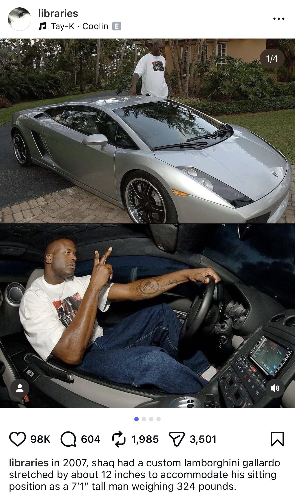
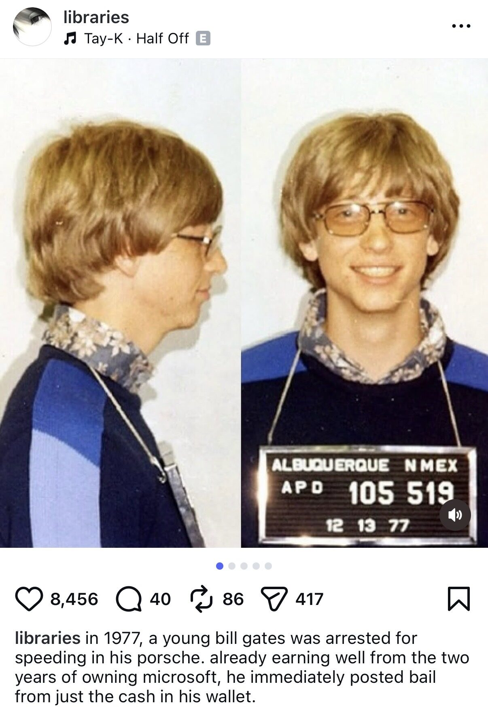
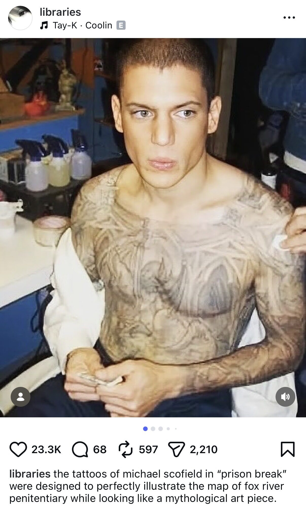

1. AUDIO EMBEDS: I curated five posts to support the rollout of Tay-K's new releases, including Coolin and Half Off. Each placement was intentionally selected to reflect the image he originally built, as the sound remained consistent with what listeners already associated with him.



2. DIRECT FEATURE: Since Tay-K has been an established name for a decade now, it wasn't necessary to introduce him subtly. Instead, the approach of this campaign was to directly gain attention off of his situation, that being his jail time and his legacy.